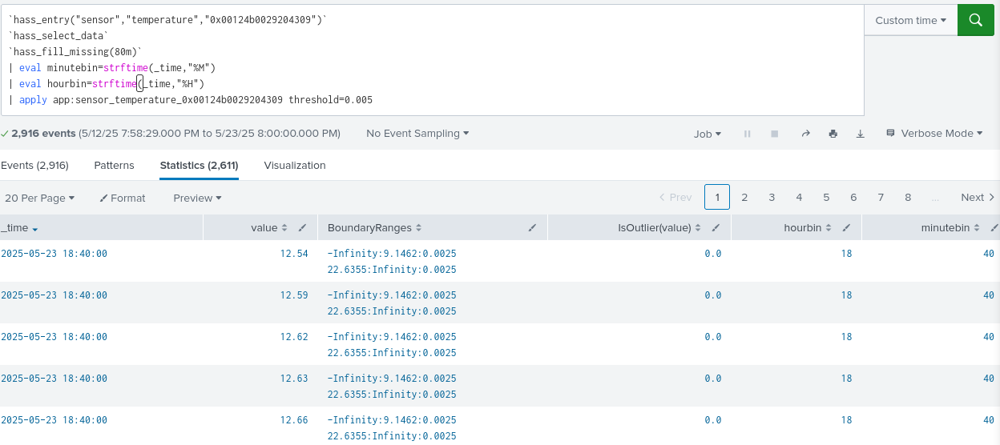
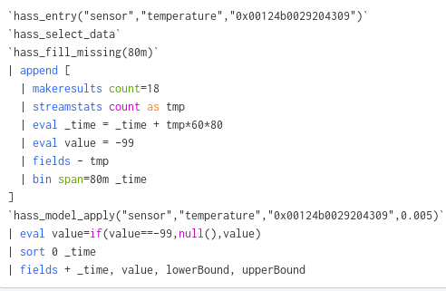
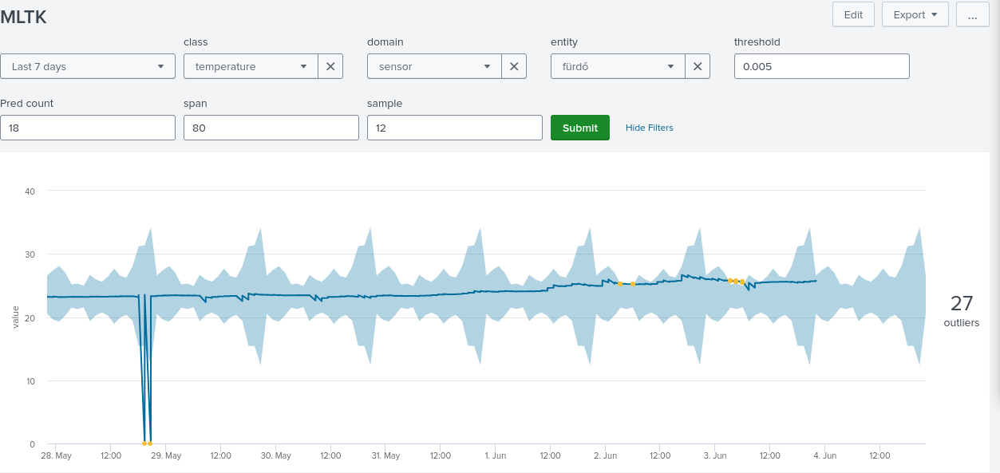

A probléma
flowchart TB; data["Adatok jellemzői"]; source["Forrás: hőmérők"]; cylic["Ciklikusság: nap-éj"]; trend["trend: növekvő, tavasz"]; goal["Anomáliák észlelése"]; data --> source; data --> cylic; data --> trend; data --> goal;
Előfeltélek
Folytonosság
flowchart LR; problem["Hiányzó értékek"]; cantuse["`Nem lehet null-okon matematikai műveleteket csinálni`"]; subgraph solutions["lehetséges megoldások"]; constant["konstans"]; prev_value["`előző/következő érték`"]; med_val["`valamilyen középérték`"]; interpol["`interpolációk - spline - lineáris`"]; end; problem --> cantuse; problem --> constant; problem --> prev_value; problem --> med_val; problem --> interpol;
Lehetséges megoldások
mindmap root(Ciklikus, idősoros adat) Alapvető SPL stats tstats streamstats Gyórsításos SPL Summary index data model + tsats lookup Extra megoldások Streaming statisztikai algoritmusok Machine learning - MLTK/DSDL
A fájl
Támogatott eloszlások
Elsőnek elemezzük ki ezt a részt:
graph LR A[DensityFunction Class] --> B[Initialization] B --> C[Parameter Handling] C --> D[Distribution Types] C --> E[Thresholds] D --> D1[AUTO] D --> D2[NORMAL] D --> D3[EXPONENTIAL] D --> D4[GAUSSIAN_KDE] D --> D5[BETA]
Most csak a normális eloszlással foglalkozunk.
codecs_manager.add_codec(
'algos_support.density_function.normal_distribution',
'NormalDistribution',
SimpleObjectCodec,
)
fit ág
graph LR A[DensityFunction Class] A --> F[Main Methods] F --> F1[fit] F1 --> G[Data Processing] G --> G1[Split by Groups] G --> G2[Fit Distribution] G --> G3[Validate Data]
def _fit_data(self, distribution, data, mlspl_limits):
"""Fit an instance of ProbabilityDistribution over data.
Warn if there are too few data points in the data array"""
min_data_size = int(mlspl_limits.get('min_data_size_to_fit', 50))
if len(data) < min_data_size and not self._warned_on_few_training_data:
self._warned_on_few_training_data = True
self._warn_on_few_training_data()
# To fix the error of object not having "_exclude_dist" attribute, when partial_fit is used on a smaller dataset and with an earlier version of MLTK (<=5.3.0)
self._exclude_dist = self._exclude_dist if hasattr(self, '_exclude_dist') else None
distribution.fit(data.values, self._metric, self._exclude_dist)
self._warn_on_dist_name_mismatches_threshold(distribution.get_name(), self._threshold)
self._distance = distribution.distance
FIT ág következtetései
flowchart LR;
code_min{"`min 50`"};
imp_min["Egy csoportban legalább 50"];
imp_min2["80m"];
code_min --> imp_min;
imp_min --> imp_min2;

Konfiguráció

mlspl.conf
[default]
handle_new_cat = <string>
max_distinct_cat_values = <int>
...
[DensityFunction]
default_prob_threshold = <float>
max_fields_in_by_clause = <int>
max_groups = <int>
* defaults to 1024
...
[score:pairwise]
max_fields = <int>
* default to 50
| apply
graph TB A[DensityFunction Class] A --> F[Main Methods] F --> F3[apply] F3 --> H[Output Generation] H --> H1[IsOutlier] H --> H2[BoundaryRanges] H --> H3[ProbabilityDensity] H --> H4[SampledValue]

| apply


Vizualizáció

Predikció
 Threshold paraméter
$\alpha=0.05$

$\alpha=0.1$
Használat
graph TB
hasss_build_model_furdo[["`hasss_build_model_furdo
20 1 */1 * *`"]];
hasss_build_model_halo[["`hasss_build_model_halo
40 2 */2 * *`"]];
hasss_build_model_konyha[["`hasss_build_model_konyha
0 4 */3 * *`"]];
hasss_build_model_dolgozo[["`hasss_build_model_dolgozo
20 5 */4 * *`"]];
hass_build_model{{"`hass_build_model`"}};
hass_entry>"`hass_entry`"];
hass_select_data>"`hass_select_data`"];
hass_fill_missing>"`hass_fill_missing`"];
hass_model_builder>"`hass_model_builder`"];
hass_build_model --> hasss_build_model_furdo;
hass_build_model ---> hasss_build_model_halo;
hass_build_model ----> hasss_build_model_konyha;
hass_build_model -----> hasss_build_model_dolgozo;
hass_entry --> hass_build_model;
hass_select_data --> hass_build_model;
hass_fill_missing --> hass_build_model;
hass_model_builder --> hass_build_model;
Model építés példák
[hass_build_model]
search = `hass_entry("$domain$","$class$","$entity$")`\
`hass_select_data`\
`hass_fill_missing($span$m)`\
`hass_model_builder("$domain$","$class$","$entity$",$threshold$)`
[hasss_build_model_dolgozo]
cron_schedule = 20 5 */4 * *
search = | savedsearch hass_build_model domain=sensor \
class=temperature entity=0x00124b0029197748 threshold=0.005 span=80
enableSched = 1
schedule_window = auto
Riasztás
graph TB
decision_1{"`Milyen
sűrű a
modellünk?`"}
hystering["Hiszterizálás"];
threshold["Magas threshold"];
decision_1 --"Eléggé
(legalább félóránként)"--> hystering;
decision_1 --"Több, mint félóránként van
1 adatpont"--> threshold;

Riasztás gráf
graph TB
HASS_Erkely_Outler[["`HASS Erkely Outler
10,30,50 * * * *
-90m@m -10m@m
cnt=0`"]];
HASS_Konyha_Outler[["`HASS Konyha Outler
10,30,50 * * * *
-90m@m -10m@m
cnt=0`"]];
HASS_furdo_Outler[["`HASS furdo Outler
10,30,50 * * * *
-90m@m -10m@m
cnt=0`"]];
HASS_halo_Outler[["`HASS halo Outler
10,30,50 * * * *
-90m@m -10m@m
cnt=0`"]];
HASS_Dolgozo_Outler[["`ASS Dolgozo Outler
10,30,50 * * * *
-90m@m -10m@m
cnt=0`"]];
hass_apply_modell{{"`hass_apply_modell`"}};
hass_entry>"`hass_entry`"];
hass_select_data>"`hass_select_data`"];
hass_fill_missing>"`hass_fill_missing`"];
hass_model_apply_extend_pred>"`hass_model_apply_extend_pred`"];
hass_model_apply>"`hass_model_apply`"];
hass_clean_pred>"`hass_clean_pred`"]
hass_entry --> hass_apply_modell;
hass_select_data --> hass_apply_modell;
hass_fill_missing --> hass_apply_modell;
hass_model_apply_extend_pred --> hass_apply_modell;
hass_model_apply --> hass_apply_modell;
hass_clean_pred --> hass_apply_modell;
hass_apply_modell --> HASS_Erkely_Outler;
hass_apply_modell ---> HASS_Konyha_Outler;
hass_apply_modell ----> HASS_furdo_Outler;
hass_apply_modell -----> HASS_halo_Outler;
hass_apply_modell ------> HASS_Dolgozo_Outler;